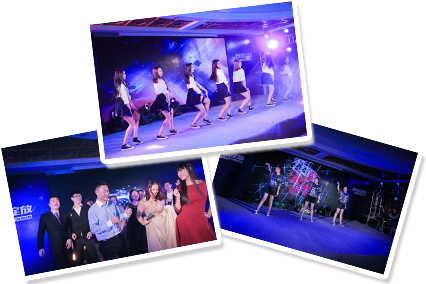
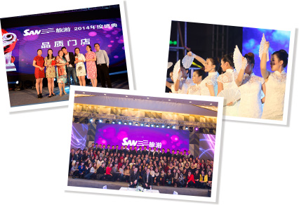
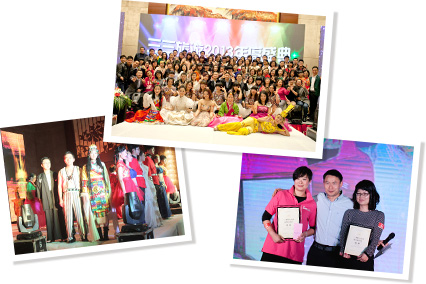
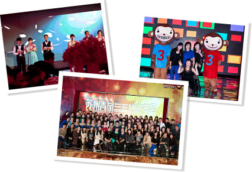

2015年度盛典2015年12月29日，“自由绽放•三三旅游2015年度盛典”在浙江建德皇爵洲际酒店隆重举行，三三旅游全体家人、建德市委、旅游局等领导出席了本次盛典。在年度表彰环节中，在2015年为公司做出突出贡献的家人都纷纷登台领奖。晚宴还对本年度做出突出表现的集体和个人作出表彰。其中包括优秀门店、卓越表现、金牌店长、优秀部门经理、优秀导游、金牌旅游顾问等奖项。晚宴提供了Iphone6s、现金红包、coach钱包、行李箱、背包等奖品进行抽奖。

2014年度盛典2014年12月28日，主题为“奔跑吧，三三”三三旅游2014年度盛典在园区凯悦大酒店举行。本次年会上，颁发了优秀导游、优秀培训师、金牌旅游顾问、优秀部门经理、品质门店、最佳业绩团队、优秀团队奖等数十个奖项，对表现突出的个人和集体作出了表彰。年会还现场抽出了一系列大奖：既有泰国乳胶枕、新秀丽拉杆箱，也有最新版iPadmini，当然了还有大奖—3 台iphone 6！
秉承品质第一持续创新的价值观，由员工自编自演的节目依然是本届年会最大的亮点。三大男神合唱《奔跑》帅气逼人，七朵金花表演的舞蹈《咏春》惊艳亮相，出境部王晨独唱《Can’t take my eyes off you》热辣激情，年度神曲《小苹果》和《Gentleman》在三三家人的改编下HI翻全场，将此次盛典推向了高潮！

2013年度盛典2013年12月15日，“新里程新梦想•三三旅游2013年度盛典”在园区金鸡湖大酒店隆重举行。苏州青旅集团领导、三三旅游合作景区以及三三旅游的全体家人近200人参加了本次盛典。在年度表彰环节中，在2013年为公司做出突出贡献的家人都纷纷登台领奖。晚宴还对本年度做出突出表现的个人和集体作出表彰。其中包括卓越团队奖、金牌店长、优秀部门经理、优秀导游、金牌旅游顾问、突出贡献奖、服务先锋奖等。今年的奖品更加丰厚诱人，一等奖：mini-ipad2四台；特等奖：20g金条两根。

2012年度盛典2012年12月29日，年度盛典在苏州园区洲际酒店宴会厅成功举办。参加本次晚宴的有：苏州青旅集团领导，三三旅游全体家人，合作景区、车队、地接社、供应商以及苏州各大报纸、门户网站、论坛媒体等合作伙伴、论坛媒体等合作伙伴。各位嘉宾在签到墙面前签字，并与三三吉祥物嘻嘻、哈哈合影留念。